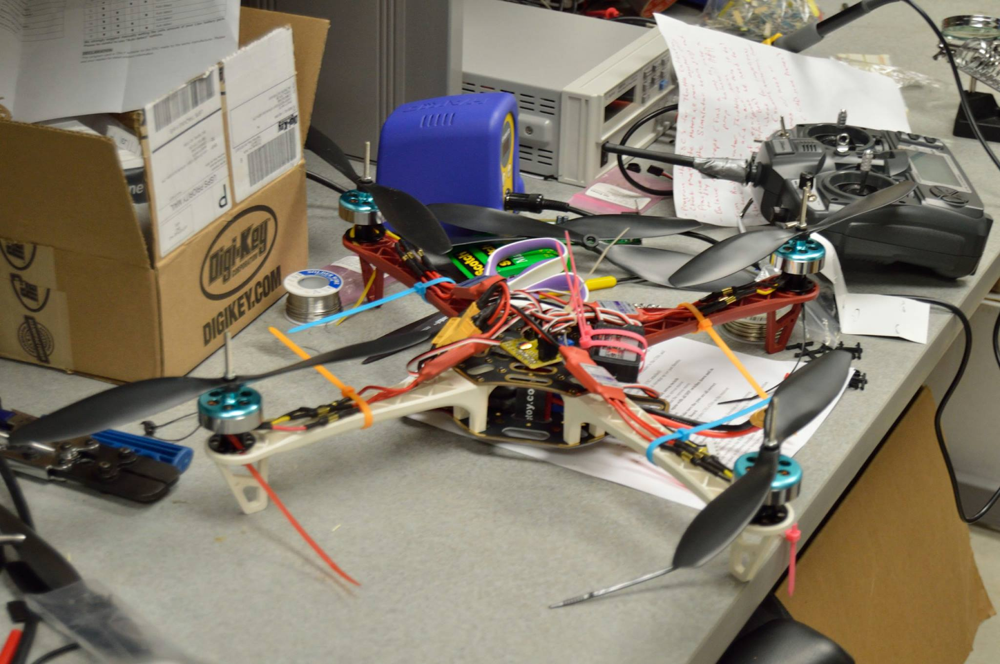
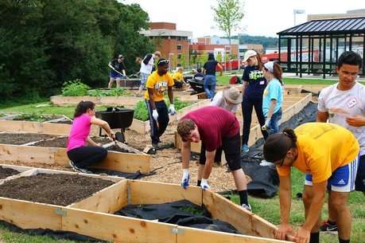
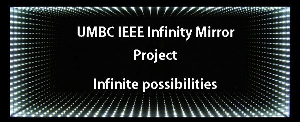
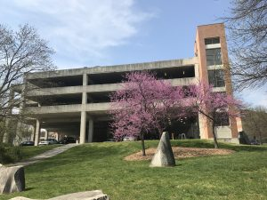
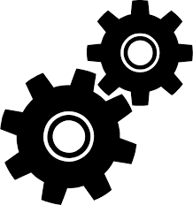

We are UMBC's student branch of IEEE (Institute of Electrical and Electronics Engineers), the world's largest professional association for the advancement of technology.
Our graduate and undergraduate student members share technical interests rooted in electrical and computer sciences, engineering and related disciplines.
At our meetings and events we will present and promote current research trends at UMBC and elsewhere, host skills workshops, and provide our members the opportunity to expand their network of contacts.
Here are some of our member's/alumni's work. Click on the names to learn more
×
Quadcopters on the Quad

Build multiple quadcopters to create a “swarm” that can fly in formation autonomously.
Provide opportunities for students in IEEE and Retriever Robotics to learn about components on a quadcopter.
Give engineering students an opportunity to apply their knowledge to a practical application.
×
Coil Train Project
Students design and build a prototype that uses electromagnetic coils to move and stop a projectile.
In the process students learn about Electromagnetic forces, designed custom circuitry, and in future implementations, starting to look into sensory data.
×
Garden Project

The garden project is an attempt to build an autonomous gardening and monitoring system for assisting in the cultivation of garden plants. This involves the use of arduinos, sensors, data acquisition, storage and analysis. The entire system will implement a solar panel as well.
×
Infinity Mirror Project

The infinity mirror is a project designed to embellish the lab window, allowing passing students to see both what the student IEEE branch is up to and report other helpful information. The infinity mirror is a basic concept, but students shall implement a raspberry pi with a LCD screen to display widgets and calendar events as well.
×
Quadrupedal Robot Project
This group of students is working to build a modifiable walking platform with four legs. They hope to experiment with different walking and sensing methods, as well add additional functionalities to the platform.
×
Parking Project

This group of students is working to solve the commuter parking problem on campus by informing students where parking spots are available. They plan to work with photo analysis and machine learning, as well as build and test several low-powered devices.
×
Scoring System Project
This project is a special collaborative project with the Baltimore Section of IEEE. Students involved in this project are gaining real-world experience as they develop software to receive, store, organize, and display team scores for a Robotics Challenge hosted by the IEEE Baltimore Section.
×
True Gears Project

We are working with the UMBC Retriever Robotics Team to build a Robotic Dog "True Gears", which will act as their mascot at future robotics events. This project involves a range of physical construction, circuit development, and programming.